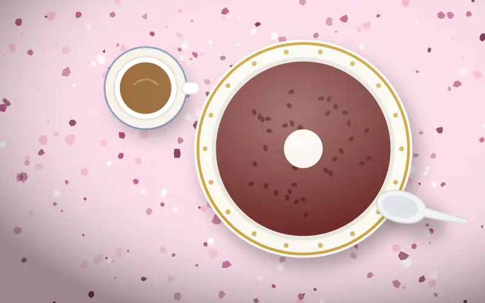
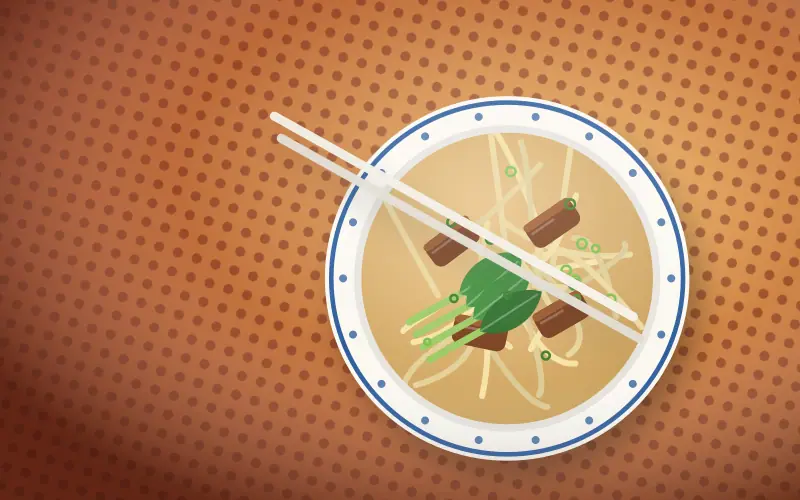
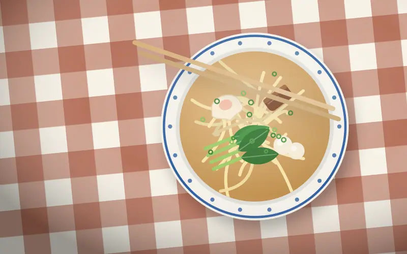
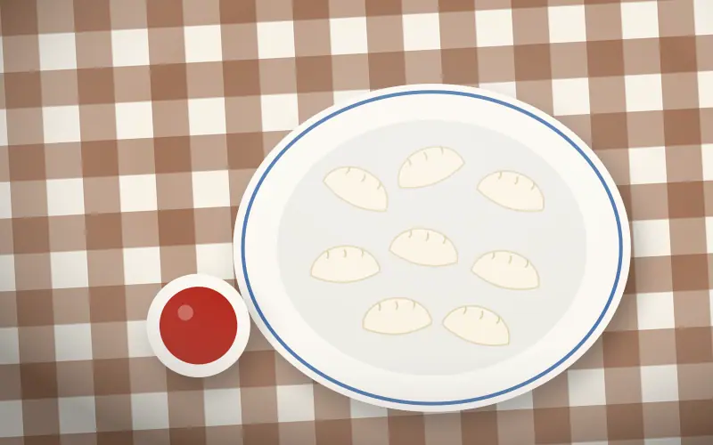

Cheap eats in Sham Shui Po 深水埗區
12 places, from $14. Tap one for prices, hours and the nearest MTR.
 Kung Wo Beancurd Factory公和荳品廠 · Sham Shui Po$26
Kung Wo Beancurd Factory公和荳品廠 · Sham Shui Po$26  Hop Yik Tai合益泰小食 · Sham Shui Po$18
Hop Yik Tai合益泰小食 · Sham Shui Po$18 
Kwan Kee Store坤記糕品 · Sham Shui Po~$14 Tim Ho Wan添好運 · Sham Shui Po$78
Tim Ho Wan添好運 · Sham Shui Po$78  Lau Sum Kee劉森記麵家 · Sham Shui Po$46
Lau Sum Kee劉森記麵家 · Sham Shui Po$46  Kam Kee Cafe金記冰室 · Sham Shui Po$44
Kam Kee Cafe金記冰室 · Sham Shui Po$44  Man Kee Cart Noodle文記車仔麵 · Sham Shui Po~$48
Man Kee Cart Noodle文記車仔麵 · Sham Shui Po~$48
Wai Kee Noodle Cafe維記咖啡粉麵 · Sham Shui Po~$50 Sun Heung Yuen新香園（堅記） · Sham Shui Po~$40
Sun Heung Yuen新香園（堅記） · Sham Shui Po~$40
Kwan Kee Bamboo Noodle坤記竹昇麵 · Cheung Sha Wan~$58
Ah Chun Shandong Dumpling阿純山東餃子 · Sham Shui Po~$52Hing Wah Street West Cooked Food Market興華街西熟食市場 · Cheung Sha Wan~$55